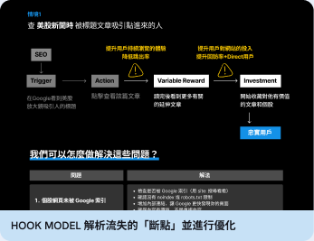
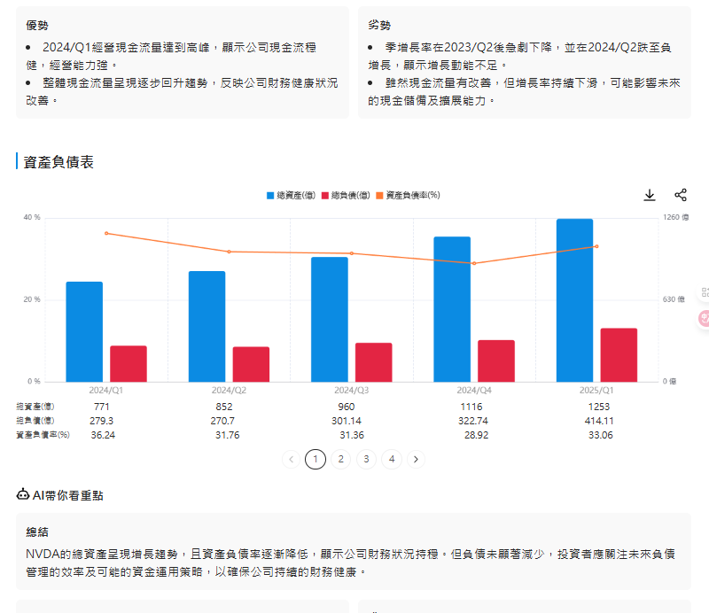
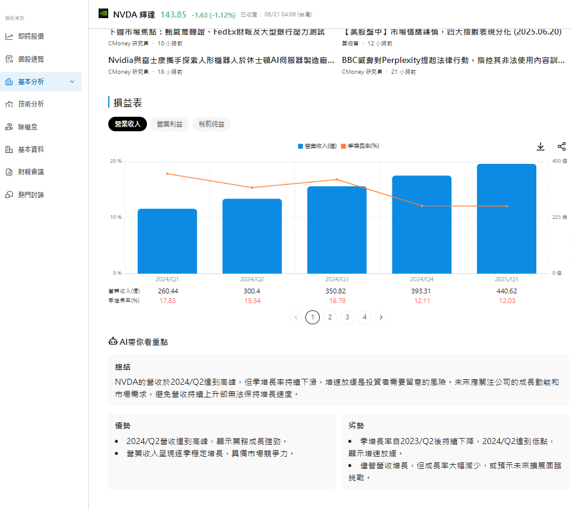
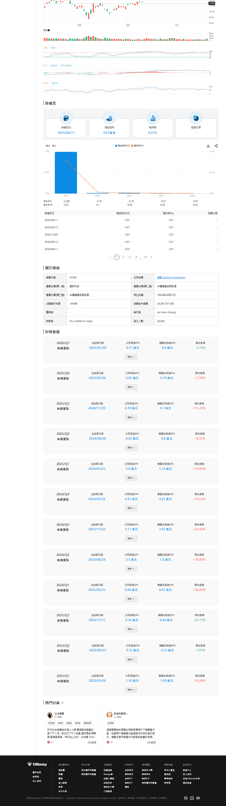
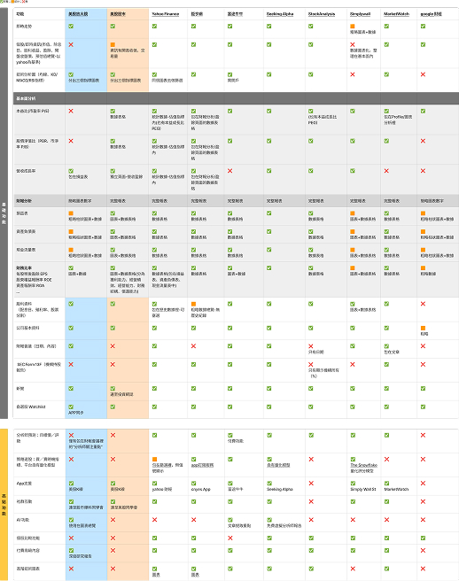
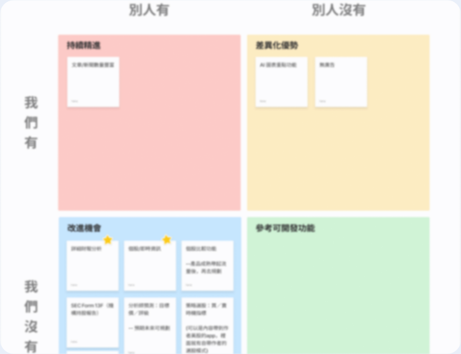
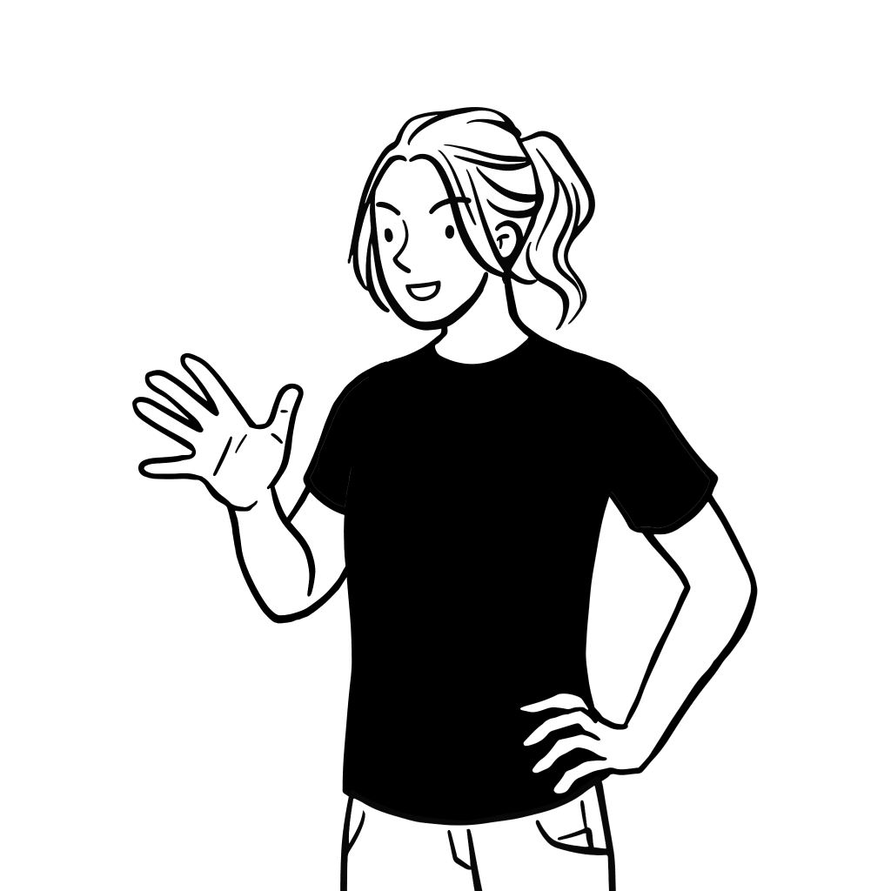

UI/UX · Web Design
美股放大鏡網站改版
針對台灣美股散戶與新手投資人，透過認知走查、競品分析與使用者訪談，重新改版首頁、梳理個股頁資訊架構並補全財報資料缺口。在優化前端效能與體驗後，成功將平均停留時間從 46 秒提升至 50.6 秒（+10%），並推動重點站台 SEO 排名從 13.8 名躍升至 6–7 名，週流量成長 22–36%。
認知走查
競品分析
使用者訪談
資訊架構
UI 設計

針對台灣美股散戶與新手投資人，透過認知走查、競品分析與使用者訪談，重新改版首頁、梳理個股頁資訊架構並補全財報資料缺口。在優化前端效能與體驗後，成功將平均停留時間從 46 秒提升至 50.6 秒（+10%），並推動重點站台 SEO 排名從 13.8 名躍升至 6–7 名，週流量成長 22–36%。
美股放大鏡是一個面向台灣投資人的美股股市資訊與財經新聞平台，提供個股頁、財報分析、AI 摘要等功能。隨著競品平台功能逐漸完善，站內 SEO 排名下滑，用戶留存率偏低。
本次設計任務聚焦於首頁、個股頁的完整優化，目標是透過資訊補全、架構重整並調整閱讀動線與效能提升，解決投資人在站內無法完成「看懂一支股票」的核心體驗斷點。
解決用戶進站與產品體驗，提升重點站台 SEO 排名
提升美股放大鏡個股頁體驗，排名進前 10 名，新增 PV、工作階段數與停留時間提升
先以認知走查釐清問題，再依實際使用習慣重新定位架構規劃的依據。
認知走查
逐一走過個股頁的關鍵任務流程，統整目前資訊架構與畫面上的問題
競品分析．架構規劃 v1．設計初版
比較站內外美股資訊平台，找出功能落差，並產出第一版資訊架構與設計稿來評估閱讀動線
美股研究員／投資者訪談
提供畫面給訪談者，深入了解內部研究員與美股 PM 的實際使用習慣，作為本專案最關鍵的架構調整依據
架構規劃定案
根據現有數據評估各項數據點擊量，並考量工程人力與美股放大鏡目前的低流量現況，決定先補齊重要數值，而非一次做滿所有競品功能
設計精稿 → 工程開發
完成高保真設計稿並交付工程實作
透過四種互補的研究手法，從不同角度收斂問題真相，避免單一方法帶來的視角盲區。
目前個股頁的問題（實際畫面）





與競品相比，我們目前缺乏的功能

優先方向
根據站內可取得的資料，現階段優先補強基礎資料的完整性，完整財務報表內容、關鍵走勢數據。
美股研究員
寫美股分析的內容作者

美股投資者
投資台股也研究美股的投資人
根據訪談回饋，美股研究員需產出文章內容，對數據的完整性與預測性有較高需求；而一般投資者則習慣以台股操作邏輯看待美股，較依賴K線圖與新聞摘要，多數僅關注少數熟悉的大型公司，對資料的研究深度相對較低
目前個股頁的問題（實際畫面）
與競品相比，我們目前缺乏的功能
優先方向
根據站內可取得的資料，現階段優先補強基礎資料的完整性，完整財務報表內容、關鍵走勢數據。
美股研究員
寫美股分析的內容作者
美股投資者
投資台股也研究美股的投資人
根據訪談回饋，美股研究員需產出文章內容，對數據的完整性與預測性有較高需求；而一般投資者則習慣以台股操作邏輯看待美股，較依賴K線圖與新聞摘要，多數僅關注少數熟悉的大型公司，對資料的研究深度相對較低
研究收斂後，識別出三個根本性設計問題，彼此相互強化，共同造成用戶高跳出率。
個股頁資訊量嚴重不足
財報圖表存在大量缺值，三大財報（損益表、資產負債表、現金流量表）資料不完整，即時行情關鍵指標（昨收、開高低收）完全缺席，導致投資人無法在站內完成基礎研究決策。
閱讀結構混亂，資訊優先序錯位
AI 摘要區塊被置於財報圖表之前，破壞使用者由「基本面 → 輔助解讀」的自然閱讀流。區塊排列缺乏層次，散戶在尚未建立基本認知的情況下先接收 AI 結論，反而增加困惑感。
展開式佈局不利資訊擴充
初期為填滿畫面，所有區塊一律採展開式排列（accordion always-open）。隨資料量成長，頁面長度急遽增加，導致滾動體驗惡化，且無法為新增資訊類型建立合理的視覺容器。
三個解決方向對應三個問題根源，優先處理資料完整性，再逐步重構架構與強化效能。
改版上線後，個股頁的搜尋排名與流量表現皆有明顯提升：
重點站台 SEO 排名（原 13.8 名）
個股頁 PV 每週成長
週流量成長區間
曝光成長
個股頁進入搜尋結果前 10 名，顯著提升自然流量來源比例；優化上線後連續四週觀測數據，流量成長趨勢穩定，無反彈跡象。